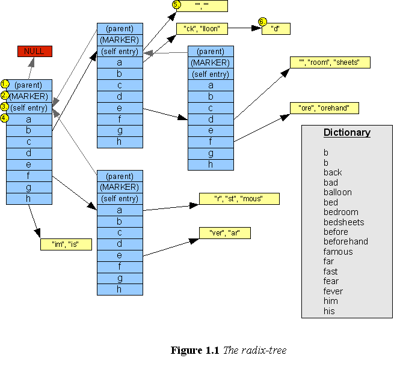
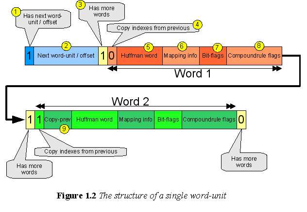
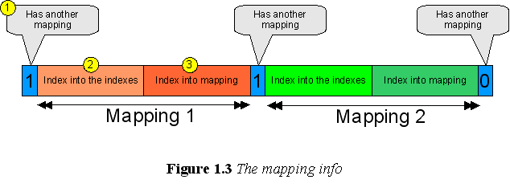
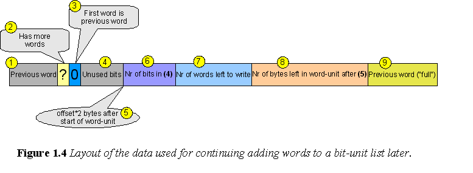

Fundamental data structures in OpSpellChecker
1 - The radix-tree
The so-called radix-tree is something simlar to what's called a “Patricia trie“ in some publications – where “leafs“ in the tree is lists with words containing the part (the end) of the words which is not implicated by the leafs positions in the tree. In the spellchecker are characters in the words that should be stored in the tree mapped to “indexes“. Each index can have several different characters that maps to it, for example is upper-/lower- case versions of the same letter mapped to the same index. Furthermore can characters be explicitly mapped together by the MAP keyword in the affix-file (.aff).
Each “node“ in the radix-tree is represented by an OpSpellCheckerRadix object. This object is an an practice an array of RadixEntry objects, and, an RadixEntry object is in practice a 32-bit value (on a 32-bit platform), or a 64-bit value (on a 64-bit platform). This value is either a pointer or a counter. Counters are only used during the build-up of the tree, and the purposes of the counters are described later. However, when the dictionary is completely loaded in memory will the values be either pointers (to child OpSpellCheckerRadix arrays, or “word-units“, which will also be described later) – or NULL, for empty leafs in the tree.
Let's illustrate the loaded radix-tree, in this example is characters used instead of indexes in order to make it easier to grasp the point:

The OpSpellCheckerRadix has a pointer to it's parent, where the root-radix's parent pointer is NULL.
For the purpose of implementing RadixEntry::GetIndex() and RadixEntry::GetParent() (which should not be used frequently) is a “magic“ marker-entry placed before the “self-entry“.
The self-entry is the RadixEntry with index 0 in the OpSpellCheckerRadix, that is OpSpellCheckerRadix::AtIndex(0) returns a pointer to the RadixEntry that is the self-entry. The self-entry has a pointer to the words that corresponds to the OpSpellChecker's own position in the radix-tree, hence does the words in the word-unit(s) for the self-entries just contains “empty“ ends of the words.
The rest of the indexes (1 to n) contains either pointers to word-unit(s) or pointers to child OpSpellCheckerRadix objects, a pointer to an OpSpellCheckerRadix points at the self-entry (index 0) in the child OpSpellCheckerRadix's array of RadixEntry objects. During “dictionary parsing pass 1“ will the OpSpellCheckerRadix objects be created. RadixEntry objects that doesn't point at child OpSpellCheckerRadix objects will instead be counters, counting how many words that ends up on that entry, that is, that should be stored somewhere below the entry in the tree. When a counter has reached SPC_RADIX_ALLOCATION_COUNT will a child OpSpellCheckerRadix be created and the entry will point at that radix. The new radix will initially have all entrys (from the self-entry at index 0 to index n) set to a count of zero. This is sort of “incorrect“ as a lot of words that already has been processed should be somewhere under the new radix-entries. So this procedure is just an estimation for allocating new OpSpellCheckerRadix objects in order to keep the number of words in each word-unit list at an acceptably low level.
The word-units contains the “end“ of the words – the part of the words that are not implicated by the position in the radix-tree for the word-unit list. The words in the word-units will contain more information then just the characters in the end of the word, this is described by figure 1.2.
During “dictionary parsing pass 2“ is all words in the dictionary processed again and the RadixEntry objects are used as counters again, this time for counting exactly how many words that should resist under each entry that is not a pointer to an OpSpellCheckerRadix. The purpose of the counting is for calculating how large word-units we should allocate later. In “dictionary parsing pass 3“ is the word-units created and the words inserted in those. However, usually will not all words that should be inserted under a certain entry be available when the word-unit is created. This is because we only buffers a smaller number of words (currently ~1000) which we will insert in the tree in “chunks“. If TWEAK_SPC_PARTITIAL_SORTING_FOR_LOWER_MEMORY is enabled will the words inside those chunks be sorted which increases the chance of having all words for an entry available for insertion in one “operation“. But anyway, when only a subset of the words that should be under an entry is available can't we know how much space they will occupy – because of the “compression“ which will be described later. Due to this, we will approximate the size that each word will take (currently 3 bytes) in order to allocate a word-unit of feasable size. If this later turns out to be too small, we'll have to allocate another word-unit – and if this word-unit even later turns out to be too small we'll need to allocate yet another one, etc. Therefore are the word-units stored as linked lists, which this point tries to illustrate.
This conclude the three steps (“dictionary parsing passes“) necessary for creating the radix-tree together with it's word-units containing the words:
Decide where we should allocate OpSpellCeckerRadix objects so that we keep the number of words in each word-unit list at an acceptably low level.
Count exactly how many words that should be in each linked list of word-units.
Create the word-units and insert dictionary words in them, try to have only one word-unit under each radix-entry that is a “leaf“, but if we fails – a linked list of several word-units will be created.
The exact layout of the data in the word-units is what is illustrated in this figure (example of ONE word unit):

Size: 1 bit. If this bit is set will the next word-unit / offset (2) follow – otherwise will has more words (3) follow immediately.
Size: 32/64 bits depending of the size of a pointer. If not all words that we want to add in this word-unit is available when we create it, then we'll insert an offset into the word-unit here that tells where in the word-unit we should continue to add the next word, after we've added the ones that are available. This offset is currently the byte offset into the word-unit divided by 2. The reason for the division is for allowing a word-unit to be up to 8196 bytes, but at the same time we'd like to keep the offset < 4096 so that it's possible to distinguish an offset (<4096) from a pointer to the next word-unit (>=4096). The “limit“ is picked as low as 4096 for ensuring that no platform would allocate memory on addresses lower then that. However, the offset doesn't point directly to the next bit where we should start writing the next word, this is illustrated in figure 1.4.
Size: 1 bit. Before each word in the word-unit will a bit indicate (by being set) that another word will follow in the same bit-unit, so after the last word will a 0 indicate the end of the bit-unit.
Size: 1 bit. This bit tells whether we should copy 1-8 indexes from the previous word in order to construct this word, if so (the bit is being set) will (9) follow, indicating how many bits we should copy. Notice that for the first word in the first word-unit in linked word-unit list will this bit always be 0, as we have no previous word to copy from. However may copying occur between bit-units, meaning that the first word in a bit-unit copies indexes from the last word in the previous bit-unit. Notice also: this bit does not exist in self-entries.
Size: varable. The indexes for the “end“ of the word, this excludes the indexes implicated by the bit-unit's position in the radix-tree, it also excludes the indexes copied from the previous word (if any). The indexes are huffman-coded, and the last index will be 0 (i.e. the huffman-code for 0). Notice: this field does not exist in self-entries.
Size: variable. This is a list of indexes-to-character mappings for those indexes that doesn't represent the most “frequent“ character among the characters that mapps to the same index. For indexes that represents the most frequent characters however will we just pick that character, which is implicated by the absence of an explicit mapping. This “mapping-info“ is illustrated in figure 1.3.
Size: variable. This is the “bit-flags“, that is, the flags specified by the AffixFlagType enum that are < SPC_RADIX_FLAGS. The combinations of which flags that are set and not is treated as numbers that are huffman-coded.
Size:variable If the dictionary contains compound-rules (defined by COMPOUNDRULE in the affix-file) will this data exists – otherwise is this field omitted. The field is a list of compound-rule flags for the word in the following format: (one bit indicating if a compoundrule flag follows, huffman-coded compoundrule flag). Hence, at the end of the list there will be a 0 bit indicating that there are no more compoundrule flags.
Size 3 bits. If bit (4) is set will this 3 bits contain the number of indexes to copy from the previous word, minus one. So the value 4 means that 5 indexes should be copied, etc.
The exact layout of the mapping-info list mentioned in point (6) in figure 1.3 is illustrated by this example:

Size: 1 bit. Before each mapping does one bit indicates if another mapping follows or not.
Size: The number of bits that is needed for representing an index into the full word. This field tells whitch index into the word that should be mapped to a different character other the the most frequent among the characters that maps to the index found at that index in the word. For example, in the word “MS-DOS“ which contains 6 letters will the indexes into the word (the indexes) be represented by 3 bits.
Size: The number of bits that is needed for representing an index into the characters that maps to the index except of the most frequent character. For example, if the characters 'm' and 'M' (and no other) are mapped to index 5 and 'm' it the most frequent character in the dictionary among those – then will this field be of length 0 bits (not exist at all) for the character 'M', as it takes zero bits to index into the array consisting of 'M' (the array of characters excluding the most frequent that maps to the index). On the other hand, if the characters “-+*/%“ (5 characters) is mapped to the same index, and '+' is the most frequent character – then will the index into the mapped characters use 2 bits, as this is what is necessary for indexeing into an array of 4 (the remaining) characters. The lists of characters that maps to the same index is contained in the MapMapping structs.
The last question-mark remaining about the word-units is what happens when more word should be added to a linked list of word-units, but they are not yet available. Then we use the offset (which also functions as next word-unit pointer) described in (2) for figure 1.2 for storing the position where we should continue to add the next word when we later encounter it. As mentioned, this is not a bit-offset, and not even a byte offset – but a two-byte offset. Therefore we'll need to store the exact bit-location where we can continue at that offset, and not only that – we also need to store the previous word completely (except of the initial part implicated by the radix-tree position). The reason for the latter is that the previous word might be stored only partitially if it “copies“ indexes from the word before that word – and that word in turn might be copying indexed from it's preceding word, etc. For not having to scan through all the words in the word-unit list when we should continue, we therefore stores a “full“ temporary copy of the previous word. Furthermore, yet a couple of data fields must exist, see below.
The following figure illustrates the layout of the temporary data that is used for permitting words to be added later to a word-unit list:

Size: variable. The previous word written. We won't tuch this data anymore, except of in the special case when only one word has been previously written to the word-unit list, see (3).
Size: 1 bit. This bit tells if there are more words in this word-unit, see point (3) for figure 1.2. This bit still has an undefined value as we're not sure yet if the next word that should be written fits into this word-unit, it might happen that the next word don't – and in that case will this bit be set to 0 as there will then not be any more words in this word-unit. Becuse of this – the value of this bit will be decided upon writing the next word.
Size: 1 bit. This bit will be set if only one word has previously been written to the word-unit list. In that case will (9) not exist, instead will the first and only word be used – as the first word in a word-unit list is always written out “completely“ (except of the indexes implicated by the position in the radix-tree).
Size: 0-15 bits, specified by (6). Because the offset, point (2) in figure 1.2 which points at (5) in this figure, is a two-byte offset there will usually (in 15 cases of 16) be some unused bits here.
The (base-address of the word-unit) + (the offset described in point (2) in figure 1.2) * 2, will point at (6).
Size: 4 bits. This is the number of bits in (4), this is necessary in order to be able to go back to (2) and (3) – and to know where the data for the next word should be written.
Size: 12 bits. The number of words remaining to write in this list of word-units.
Size: 13 bits. The number of bytes left in the word-unit after (5).
Size: variable. If not (3) is set will this be the huffman-coded indexes (ending with the huffman-code for 0) for the “full“ previous word, that is, all indexes except of the ones implicated by the position in the radix-tree for the word-unit list.
It might happen that the information described above can't be written to the current word-unit because there are not enough space. In that case must a new word-unit be allocated which will start with (1) and (2) in figure 1.2 and then immediately continue with (2) and forward in figure 1.4. Notice then that it might also happen that the next word can't fit into that word-unit so that yet another word-unit must be allocated for the next word – consequently we might have word-units that are “empty“ in the sense that they don't contain any words.